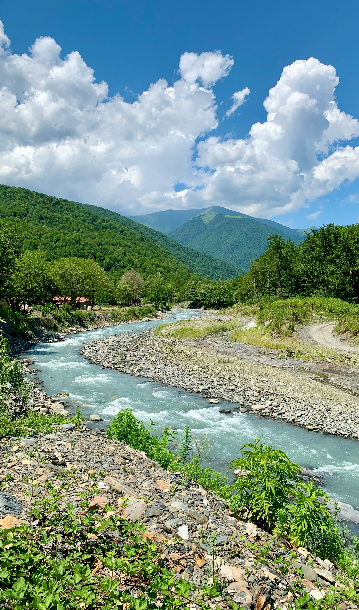

Welcome to Image Links
Home
Gallery
Menu
Home
Welcome to our website! Here's an image related to technology:
Gallery

Menu
Food Item 1
Food Item 2
Food Item 3

 Food Item 1
Food Item 1 Food Item 2
Food Item 2 Food Item 3
Food Item 3